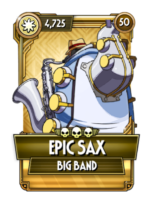

고유 능력 1: 콤보 히트마다 3%의 추가 피해를 입힙니다. (최대 50%)
고유 능력 2: 매 10의 콤보 수마다 무작위로 이로운 효과를 얻습니다.
공격용으로 최고의 빅 밴드이자 빛 속성 스킨 중 손에 꼽히는 강력한 공격자. 고유 능력 2로 얻는 무작위 이로운 효과는 덤이라고 생각하면 되고 핵심은 콤보 히트마다 3%씩 최대 50%까지 늘어나는 피해량이다. 타수가 많은 빅 밴드 특성상 50%까지 피해량이 순식간에 늘어나 매우 강력한 딜링을 할 수 있다. 빅 밴드 특유의 불굴 붙은 대시 어택과 튼튼한 내구도 덕분에 안정성도 좋은 편이지만, 게이지 관리 능력과 방어 효과에 대한 대응력이 부족하다는 단점으로부터는 예외가 아니라서 스퀴글리의 생체 퇴마사처럼 깡딜만으로 보내버릴 수 있는 스킨을 상대로 사용하는 경우가 많다.